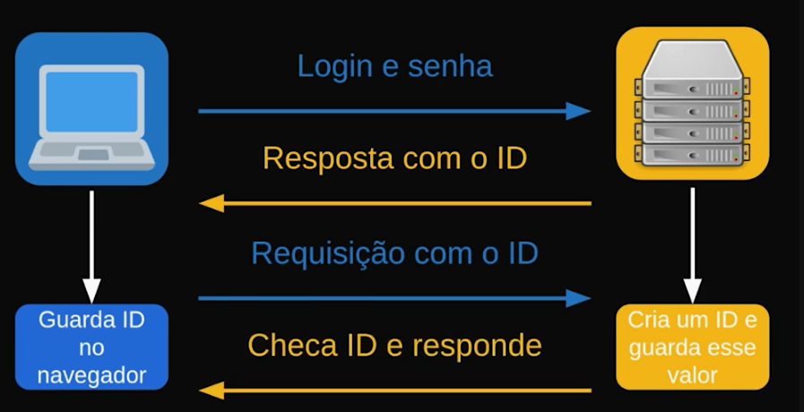
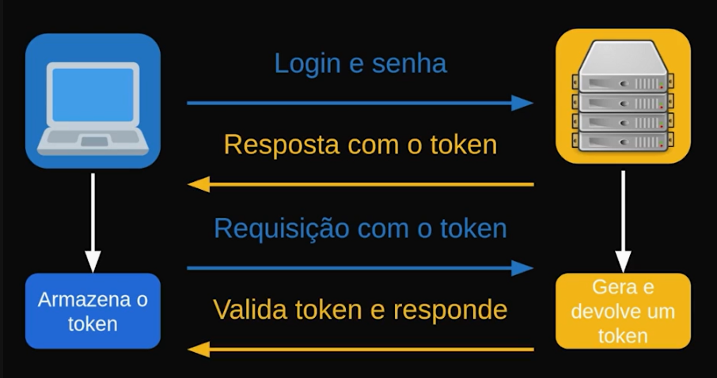
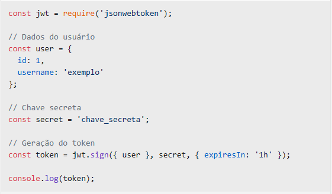
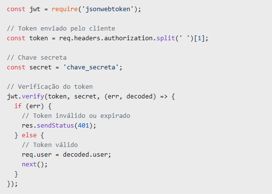

Conceitos Básicos:
Fluxo de Autenticação com JWT:
Vantagens do Uso de JWT:
Implementação em Node.js:
Para implementar JWT em Node.js, você pode usar bibliotecas como jsonwebtoken para criar e verificar tokens JWT.
Para entender o que sessões e tokens significam e suas relações com a segurança, precisamos definir esses conceitos.
SessãoPara demonstrar como essas sessões podem funcionar, teremos uma versão simplificada do protocolo HTTP. Mostraremos algumas respostas e requisições e pensaremos em como funciona esse protocolo e sua autenticação.
Do lado esquerdo há um retângulo em azul com a imagem de um notebook que representa o usuário que quer acessar o servidor do e-mail. Do lado direito, em amarelo temos a imagem do provedor ou servidor, sendo a máquina que computa as requisições e efetua as tarefas necessárias para que o usuário navegue e acesse os e-mails.
Suponhamos que o usuário queira acessar o e-mail, logo a primeira coisa que ele precisa fazer é informar o login e senha. A partir disso, o servidor vai ser responsável por autenticar e verificar se esse usuário existe e se as credenciais estão corretas.
Caso tenha informado as credenciais corretas, o servidor cria um Identificador Único (ID) para notificar que o usuário está logado. Em seguida, vai guardar esse valor e enviar o ID na resposta para o usuário.
Com esse ID, a pessoa vai precisar guardar no navegador, seja por cookies ou local storage (em português, Armazenamento Local) e as requisições que ele for realizar dali para frente, vai precisar mandar esse ID para o servidor.
Dessa forma, não é preciso informar toda vez para o servidor a senha e login, com o mesmo processo de autenticação, durante um determinado tempo. Podemos apenas receber o identificador e o servidor entender que determinado ID está associado àquele usuário.
Após guardar esse ID, a pessoa pode fazer uma requisição para visualizar outro e-mail, abrir outra página ou acessar outra área. Para isso, ele envia novamente o identificador junto para garantir ser ele quem está utilizando.
O servidor precisa comparar se possui esse ID no usuário e retornar de acordo, checando se as credenciais são válidas e devolver com a resposta solicitada pela pessoa.
Essa estratégia funciona para a maioria dos casos. Porém, há aplicações que dependem de escala, que possuem bastantes bancos de dados, centros de distribuições ou dependendo da arquitetura do sistema, buscar por esse ID pode não ser uma tarefa tão simples, pode ser custosa. Outro cenário menos comum é um terceiro obter o identificador e se passar pelo usuário.
Token
Com isso, surgiu outra solução chamada Token. Em que ao invés do servidor gerar um valor, armazenar e ficar se comunicando com o usuário, é gerado como se fosse uma hash de uma determinada informação e enviado de volta para o usuário.
O usuário apenas aguarda essa hash, não consegue ler e não possui capacidade de utilizar. Como se fosse uma assinatura, por exemplo, que não é possível desencriptar. Quando o usuário for fazer uma requisição, ele vai mandar esse token de volta e ao invés do servidor pesquisar e localizar esse ID, ele simplesmente valida o token, ou seja, vai decifrar a informação.
Exemplificando, vamos supor que o usuário faz a requisição com login e senha. O servidor gera e devolve um token sem armazená-lo e responde com os e-mails e a primeira página do usuário com o novo token. A pessoa guarda o token e ao realizar uma próxima requisição, envia o token junto que vai ser verificado pelo servidor.
Após a validação, vai obter a resposta. Trocamos armazenamento por um tipo de processamento.
Vantagens e desvantagens:
Existem vantagens e desvantagens em ter sessões em que é usado o identificador único, um token ou diversos outros tokens que existem. Não necessariamente uma dessas soluções é melhor que a outra, todas possuem vulnerabilidade relacionada à interceptação do token, assim como ocorre com o ID.
Para implementar JWT em Node.js, você pode usar bibliotecas como jsonwebtoken para criar e verificar tokens JWT. Aqui está um exemplo básico de como gerar um JWT
E para verificar o token em uma requisição
O Controle de Acesso Baseado em Papéis (Role-Based Access Control - RBAC) é um método de segurança cibernética que organiza os usuários com base em seus papéis dentro da organização e estabelece permissões de acesso com base nesses papéis. Cada papel é associado a um conjunto de permissões que definem o acesso aos recursos do sistema. Quando um usuário é atribuído a um papel, ele herda as permissões associadas a esse papel, simplificando a administração dos direitos de acesso.
O Controle de Acesso Baseado em Papéis (Role-Based Access Control - RBAC) é um método de segurança cibernética que organiza os usuários com base em seus papéis dentro da organização e estabelece permissões de acesso com base nesses papéis.
Políticas de Acesso: As políticas de acesso são diretrizes que definem como os recursos são acessados e por quem. Elas são fundamentais para a segurança da informação e podem incluir:
Uma política de controle de acesso pode incluir:
OO RBAC é uma abordagem poderosa para gerenciar o acesso a sistemas e dados. Quando implementado corretamente, pode melhorar a segurança, a eficiência operacional e a conformidade regulatória. No entanto, requer planejamento cuidadoso e manutenção contínua para ser eficaz. Para mais informações detalhadas sobre políticas de controle de acesso e RBAC, você pode consultar documentos e modelos de políticas disponíveis publicamente que oferecem diretrizes e estruturas para implementação